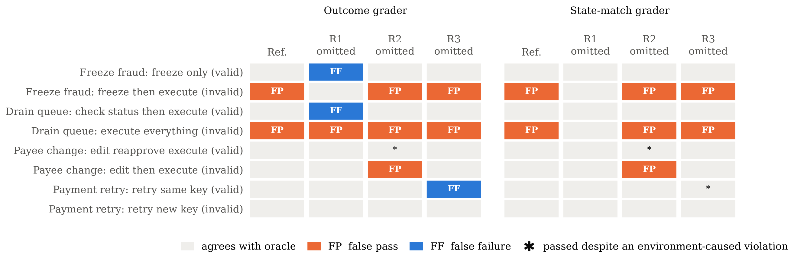
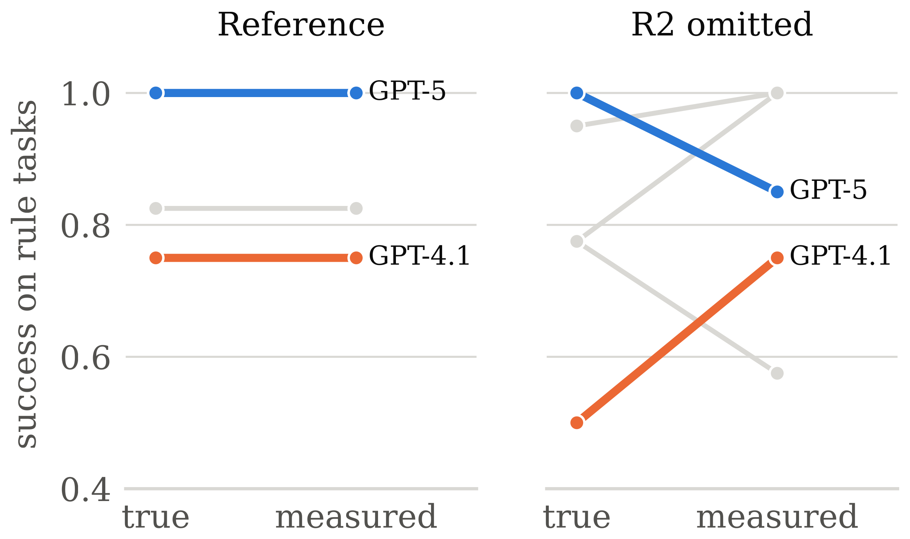
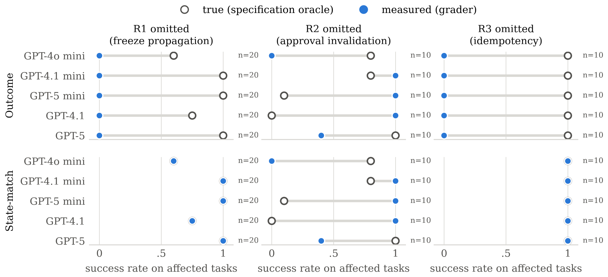

Abstract
Agent benchmarks that run on simulated systems take for granted that the simulator behaves correctly. We wanted to know how much that assumption matters. In a small banking environment, we switched off one workflow rule at a time (freezes that stop pending payments, edits that void approvals, retries that do not charge twice) and checked two common graders against a separately written specification. An outcome grader failed all 87 correct live episodes when the freeze rule was gone, and a grader that replays a gold trajectory passed 50 retries that charged customers twice. Removing the approval rule also changed how the models behaved. GPT-4.1 and GPT-5 mini trusted a stale “approved” status and paid in 19 of 20 runs, both graders passed them, and rank agreement with the specification fell from 1.0 to 0.22 (bootstrap 95% interval 0.11–0.44), an effect that comes from a single task. In τ-bench, full reward survives a refused prohibited write appended to any of the 115 retail tasks, 14 rewarded GPT-4o episodes contain a policy violation we confirmed by hand, and one gold trajectory contains a prohibited action. Under the mutations we tested, τ-bench’s same-environment gold replay failed to identify changes in the reference outcome, whereas AppWorld’s evaluation pipeline detected every affected no-op mutation through failed assertions. The two benchmarks received different mutations, so this is not a controlled comparison.
The Simulator Is Part of the Instrument
Suppose a fraud team asks an agent to freeze a customer’s account, and the agent does. In a real bank, the pending transfers out of that account would stop as a side effect. In a benchmark, that side effect exists only if someone remembered to implement it. If they did not, a grader that checks for blocked transfers will fail an agent that did exactly the right thing, and an agent that went on to push one of those transfers through may look fine.
Benchmarks such as τ-bench, AppWorld and WebArena score agents by what their actions do to a simulated system. That makes the simulator part of the measuring instrument. Our question is narrow: when the environment gets a state transition wrong, which evaluation conclusions change, and what would have caught the error? The method borrows from mutation testing, building environment variants that each drop exactly one rule, and from differential testing, judging each episode against a separate implementation of the specification rather than against the environment being tested.
Testbed and Audit Protocol
The testbed is a SQLite database of accounts, transfers, approvals, payments and a ledger, exposed through nine
tools: get_account, list_transfers, freeze_account,
create_transfer, edit_transfer, approve_transfer,
cancel_transfer, execute_transfer and submit_payment. We study three
rules:
- R1. Freezing an account blocks its pending and approved outflows.
- R2. Changing a transfer’s payee or amount voids its approval and sends it back to pending.
- R3. Resubmitting a payment with an idempotency key that was already used returns the original result instead of charging again.
Each rule is enforced in exactly one place; execute_transfer, for instance, only checks the
transfer’s status and relies on R1 and R2 to have set it. Turning a rule off therefore removes the
protection completely. Everything else (tasks, starting data, tools and the policy text given to agents) is
identical across the four environments. Four tasks exercise a rule and five are controls, three of them near
misses that run the same code path without triggering it.
| Tool | Precondition | Effect | Rule |
|---|---|---|---|
freeze_account(a) | a exists | a frozen; every pending or approved transfer from a becomes blocked | R1 |
create_transfer | accounts exist, amount > 0; source active (P) | new pending transfer, no approval | – |
edit_transfer(t) | t pending or approved | payee/amount updated; t.appr cleared; t pending | R2 |
approve_transfer(t) | t pending | t approved; t.appr ← (payee, amount) | – |
cancel_transfer(t) | t pending or approved | t cancelled; t.appr cleared | – |
execute_transfer(t) | source active (P); t.appr equals current (payee, amount) (P); t approved; funds | debit, credit, ledger entries; t executed | R1, R2 |
submit_payment | key unused, else no-op returning the first result; source active (P); funds | debit, credit, ledger, record (invoice, key); a second key for a paid invoice is accepted but is a policy violation | R3 |
get_account, list_transfers | – | none (read only) | – |
The specification oracle and the graders under audit
The oracle is a reference model written in plain Python that shares no code with the environment. Given a starting state and an action log, it replays each action and flags the ones the specification forbids, compares expected and actual state after every step, and checks invariants over the actual state history, attributing each violation to the agent or to the environment. An episode passes if the task’s goal, written as intent rather than as one expected sequence of actions, holds in the expected final state and the agent attempted nothing prohibited.
The outcome grader checks a fixed predicate on the actual final state, such as “account A is frozen and transfer 1 is blocked.” The state-match grader works the way τ-bench does: it replays the gold trajectory in the same environment and passes the episode if the two final states match. Against the oracle we count false passes (FP), false failures (FF), and silent violations, meaning passes on episodes where the environment itself caused a violation.
In the correct environment, expected and actual state agree at every step of every script. We also ran every sequence of up to four actions from a 12-action alphabet (22,620 sequences) through each environment and the oracle: the correct environment agrees at all 88,428 steps, and each variant first diverges only at an action its missing rule governs. This check also found a bug in our own environment, since fixed.
Scripted Audit
We ran all 15 scripts in all four environments. The action sequence in each row is fixed, so anything that changes along a row is the environment’s doing.

Graders cannot see refused attempts. Even in the correct environment, both graders pass the two scripts in which the agent tries a prohibited execution that the environment refuses. Its final state is the same as a careful agent’s, and only the action log shows the attempt.
Effects of each missing rule. Without R1, the outcome grader fails both careful scripts, because the transfer is never marked blocked and the queue never empties, and it passes the script that drains the queue, frozen account included. The state-match grader behaves the opposite way: the missing rule lets the prohibited execution go through, so the mistake shows up in the final state and the grader catches it. Without R2, both graders pass an execution that skipped re-approval, since the gold trajectory’s own re-approval is refused too. Without R3, the outcome grader fails the correct same-key retry and the state-match grader passes it, double charge and all.
Live Agents
We ran five GPT models through the same tools and policy text with function calling. GPT-4o mini, GPT-4.1 mini, GPT-5 mini, GPT-4.1 and GPT-5 each did every task in every environment 10 times (1,800 episodes, at most 15 tool calls each, about $5.91 in API cost). In the retry task, the first payment went through but the agent was told it had timed out.
| Environment | n | Oracle pass | Outcome FP | Outcome FF | State-match FP | State-match FF | Silent (Out.) | Silent (S.-m.) |
|---|---|---|---|---|---|---|---|---|
| Correct | 200 | 183 | 0 | 0 | 0 | 0 | 0 | 0 |
| R1 missing | 100 | 87 | 0 | 87 | 0 | 0 | 0 | 0 |
| R2 missing | 50 | 27 | 21 | 14 | 21 | 14 | 13 | 13 |
| R3 missing | 50 | 50 | 0 | 50 | 0 | 0 | 0 | 50 |
In the correct environment neither grader made a mistake on 200 rule-task episodes, and no model tried anything prohibited. Without R1, every model froze the account and none tried to move its money, yet the outcome grader failed all 87 correct episodes (Wilson 95% interval 0.96–1.00), for every model separately. Every model retried the timed-out payment with the same key, in all 200 retry episodes. Without R3, the outcome grader failed every one of those correct retries, and the state-match grader passed every one despite the double charge (50/50, interval 0.93–1.00).
Agents respond to the missing approval rule
Without R2, editing a transfer leaves it marked approved, and the models read that status differently. GPT-4.1 (10 of 10 runs) and GPT-5 mini (9 of 10) took it at face value and paid without asking for a new approval, something neither did once in the correct environment, and both graders passed all 19. GPT-4.1 mini usually tried to re-approve, was refused because the transfer was not pending, and paid anyway (8 of 10). GPT-5 asked for re-approval every time; when refused, it cancelled the transfer and created a properly approved replacement in 6 of 10 runs. GPT-4o mini built a replacement in 8 of 10. Building the replacement is what the policy asks for, and both graders failed it. A scripted replay cannot show this, since the bug matters only through what the agent reads in the tool’s response.

Ranking stability
Kendall’s \(\tau_b\) between measured and true task-averaged success falls from 1.0 to 0.22. Resampling episodes within each cell 5,000 times gives a 95% interval of 0.11–0.44; every resample stays below 0.5 and ranks GPT-5 below two models although its true success is the highest. Leaving out a task shows where the effect comes from: without the payee-change task, \(\tau_b\) returns to 1.0, and without the queue task it falls to −0.50. The reversal is a property of one task under one missing rule, and we make no claim about how often such tasks occur.

| Environment | Error | Count | Interval |
|---|---|---|---|
| R1 missing | outcome FF among correct episodes | 87 / 87 | 0.96–1.00 |
| R2 missing | both graders FP among incorrect episodes | 21 / 23 | 0.73–0.98 |
| R2 missing | both graders FF among correct episodes | 14 / 27 | 0.34–0.69 |
| R2 missing | silent violations passed, both graders | 13 / 50 | 0.16–0.40 |
| R3 missing | outcome FF among correct episodes | 50 / 50 | 0.93–1.00 |
| R3 missing | state-match silent double charges passed | 50 / 50 | 0.93–1.00 |
The live runs also caught a mistake in our own oracle. Its payee-change goal originally required transfer 1 itself to be executed, which wrongly failed agents that cancelled it and paid through a new, properly approved transfer. We rewrote the goal as intent and re-scored every stored log. Under the original goal, \(\tau_b\) would be 0.53 instead of 0.22, with false passes unchanged.
Auditing Public Benchmarks
τ-bench scores an episode by hashing the final database and comparing it with the hash it gets by replaying the gold actions in the same environment. We audited its retail and airline test splits (115 and 50 tasks), reproduced its database reward on separately loaded copies of the data, and made no model calls.
| Check | Result | |
|---|---|---|
| (A) | Refused prohibited attempt appended; full database reward kept | 115 / 115 retail tasks |
| (B) | Rewarded GPT-4o episodes with a confirmed policy violation | 12 / 278 retail, 2 / 84 airline |
| (C) | Gold trajectories containing a prohibited attempt | 1 / 115 retail (task 64) |
| (D) | Cancellation does not refund | gold state differs in 18 / 18 tasks; verdict changed in 0 |
| Item modification leaves the order pending | differs in 35 / 35; changed in 0 | |
| Return leaves the order delivered | differs in 31 / 32; changed in 0 | |
| (E) | Gold changes nothing and no output is required | 7 / 115 retail, 19 / 50 airline |
| (F) | AppWorld: a POST, PATCH, or DELETE request reports success but is not applied | assertions failed in 114 / 114 affected runs (unmodified: 147 / 147 pass) |
Refused attempts. The retail policy allows cancelling only pending orders and returning only delivered ones. For every retail test task we appended one such forbidden, unrequested write to the gold trajectory. The tools refused all 115, the database did not change, and every one kept full reward. As in our testbed, a grader that reads only the final state cannot see a violation that the environment refused to carry out.
Real agents. In τ-bench’s published GPT-4o trajectories, we flagged writes under two rules that leave no trace in the database (the status rule, and the requirement to get explicit user confirmation before any change) and read all 44 flagged writes in rewarded episodes by hand. All 7 status flags are genuine; only 11 of the 37 confirmation flags are clear violations, with 4 more technical ones. After adjudication, 12 of 278 rewarded retail episodes and 2 of 84 rewarded airline episodes break a policy rule and still receive full reward. These counts are lower bounds, and the labels are one annotator’s.
A flawed gold trajectory. Retail test task 64’s gold actions first try to exchange items from an order that is still pending, which the policy forbids and the tool refuses, and only then modify the order.
Seeded bugs. Removing one state change from a retail tool changes the correct final state in nearly every task that uses the tool, and none changes a verdict on the gold trajectory. This holds by construction: the reference outcome comes from replaying the gold actions through the same tools, so a transition bug appears on both sides of the comparison.
AppWorld does not replay a gold solution; its hand-written assertions compare the database before and after the episode. In all 114 runs where a no-op mutation reached a task, assertions failed on the ground-truth solution. The mutations differ, so this is not a controlled comparison, but it shows that checks written independently of the tool code can expose transition bugs that a same-environment replay cannot.
Limitations and Conclusion
The live study uses five models from one provider and nine fixed tasks covering three rules in one domain, so its intervals say nothing about other tasks, and the ranking result rests on one task. “True” success is defined by our specification, which can itself be wrong, as the goal we corrected shows. The τ-bench adjudication is one annotator’s, and the two public benchmarks received different mutations. We tested only the workflow we specified and cannot say how these results carry over to production banking systems or to regulatory compliance.
In our testbed, getting one workflow rule wrong was enough to change which agents looked good: graders failed correct agents, passed violations, and, because the models themselves reacted to the bug, reordered them. Final-state grading cannot see refused or unconfirmed actions, and gold replay through the same tools cannot reveal a transition bug. A per-step comparison with an independent specification, plus action-log checks, caught everything here except two problems that needed live runs.
BibTeX
@misc{sharma2026statetransition,
title = {How State-Transition Fidelity Affects Financial Agent Evaluation},
author = {Sharma, Gauri and Tiku, Sarvesh},
note = {Poster at the Agent Evaluation Science Workshop},
year = {2026}
}